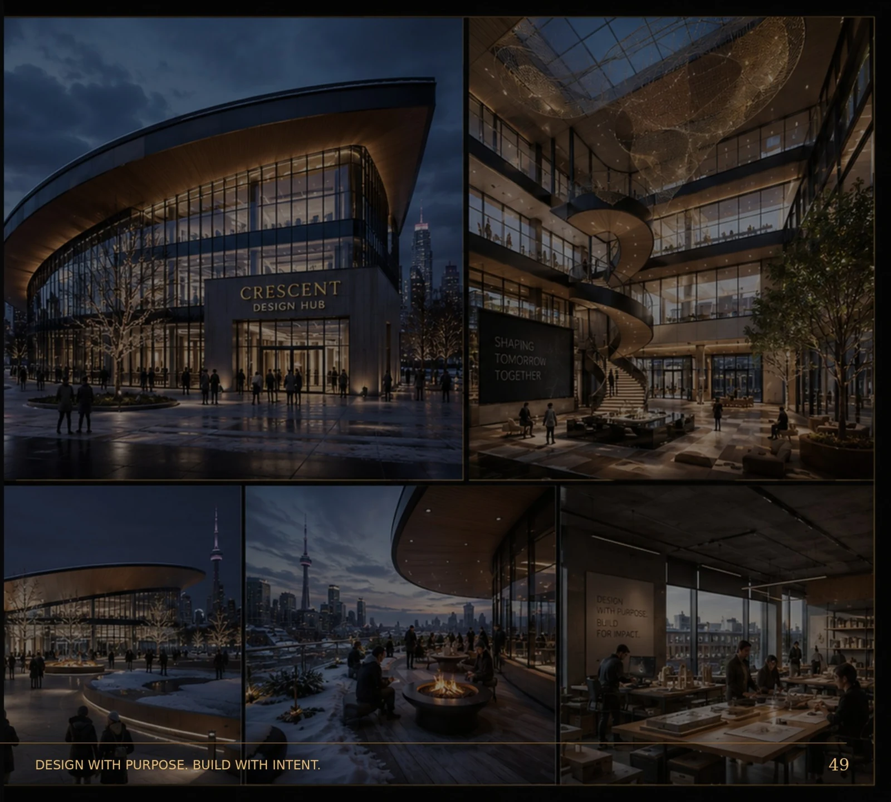

BADR Atelier / Studio
Architecture. Engineering. Real Estate Value Creation.
Founded in 2014 and headquartered in Badr City, Cairo.


Dr. Hani YoussefFounder & Design Director
Founder Statement
“
Architecture is not only a composition of forms.
The best real-estate projects succeed on more than one level.
BADR’s aim: every project should have a clear commercial reason, a distinct architectural signature and a disciplined path to coordinated delivery.
Studio Profile
Cairo based. Developer minded. Internationally oriented.
The represented portfolio spans Egypt, the GCC and North America.
Founded2014
HeadquartersBadr City, Cairo
MarketsEgypt • GCC • North America
DevelopmentSite Intelligence • Product • Identity
ArchitectureConcept • SD • DD
DigitalBIM • Coordination • QTO • 4D/5D • Handover
Global Reach
Rooted in Badr City. Connected to different project cultures.
The represented portfolio includes locations across multiple regions.
CairoRiyadhJeddahDubaiDohaKuwait CityMuscatTorontoNew Jersey

Studio + Developer